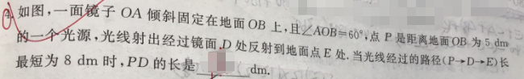
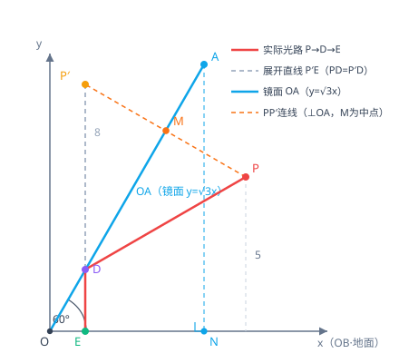

📷 点击查看原图
如图，一面镜子 倾斜固定在地面 上，且 ，点 是距离地面 为 的一个光源。光线射出经过镜面 处反射到地面点 处。当光线经过的路径 长最短为 时， 的长是 。

🔍 点击查看原图
| 知识点 | 说明 |
|---|---|
| 光的反射定律 | 入射角等于反射角，等价于"入射点关于镜面的对称点、反射点三点共线" |
| 将军饮马模型 | 定直线同侧两定点，求直线上动点到两定点距离和最小，用轴对称化折线为直线 |
| 最短路径 | 的最小值等于 关于 的对称点 到 的垂线段长度 |
| 坐标法 | 以 为 轴、 为直线 ，用对称点公式求坐标 |
作点 关于镜面 的对称点 。
根据轴对称性质：
因此光线走过的路径：
当 在地面 上自由移动时， 最短就是点 到直线 的垂线段长度。
以 为原点， 为 轴，则镜面 的方程为：
设光源 的坐标为 （因它到地面 的距离为 ）。
点 关于直线 的对称点公式为：
所以 到地面 的距离就是 。
题目给出最短路径为 ，即 到 的垂线段长为 ：
代回 坐标：
因为最短路径 垂直于地面 ，所以垂足 的坐标为 。
反射点 是线段 与镜面 的交点。 在 上，满足 ：
所以：
由 ，得：
题1（基础型·将军饮马）：如图，、 两点在直线 的同侧， 到 的距离为 ， 到 的距离为 ，、 在 上的投影相距 。在 上找一点 ，使 最小，求这个最小值。📄 查看详细解答 →
💡 提示：作 关于 的对称点 ，。
题2（变角度·求反射段）：一面镜子 与地面 夹角为 ，光源 到地面 的距离为 。光线 经镜面反射到地面，最短路径长为 ，求 的长。📄 查看详细解答 →
💡 提示：类似 p8，用 关于 的对称点 建立坐标系。
题3（实际应用·两次反射）：一束光线从点 出发，先后经直线 、 反射后到达点 ， 与 互相垂直。若 到 的距离为 ， 到 的距离为 ，且垂足连线长为 ，求光路总长的最小值。📄 查看详细解答 →
💡 提示：连续作两次轴对称，把折线拉直。